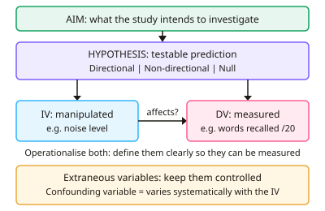

A-level Psychology Year 12 · Topic 13
Research methods: designing studies
This topic covers how to design a psychology study from scratch.
We will write aims and hypotheses, identify and operationalise variables, choose between types of experiment and experimental designs, and control extraneous variables.
Then we look at sampling, observations, questionnaires and interviews, and correlations.
- 8 subtopics
- 239 questions
- Free: 13.1 notes and 10 questions
In this topic
- 13.1Aims, hypotheses, variables and operationalisationFree below · 27 questions
- 13.2Experimental methods: laboratory, field, natural and quasi experimentsOpen in Full Marks · 23 questions
- 13.3Experimental designs: independent groups, repeated measures, matched pairs and counterbalancingOpen in Full Marks · 29 questions
- 13.4Control of variables: extraneous and confounding variables, demand characteristics, investigator effects, randomisation and standardisationOpen in Full Marks · 31 questions
- 13.5Populations and sampling methodsOpen in Full Marks · 19 questions
- 13.6Observational methods and behavioural categoriesOpen in Full Marks · 34 questions
- 13.7Self-report methods: questionnaires and interviewsOpen in Full Marks · 39 questions
- 13.8Correlational analysis and correlation coefficientsOpen in Full Marks · 37 questions
13.1 · Free notes
Aims, hypotheses, variables and operationalisation

Key points
- An aim is a general statement of what the researcher intends to investigate and why. For example: 'To investigate whether noise affects recall.'
- A hypothesis is a clear, testable prediction of the outcome, written before the study begins. It must state the IV and DV, and the conditions being compared.
- A directional (one-tailed) hypothesis states the direction of the difference or relationship, e.g. 'will recall more words'. It is used when previous research points one way.
- A non-directional (two-tailed) hypothesis predicts a difference but not its direction. It is used when earlier findings are contradictory or there is no prior research.
- The null hypothesis states there is no difference or relationship, and that any observed difference is due to chance. Statistical testing decides whether it is rejected or retained.
- The independent variable (IV) is the variable the researcher manipulates, or that varies naturally. Its levels are the conditions, e.g. noisy vs quiet is 2 levels. The dependent variable (DV) is the variable that is measured.
- Operationalisation means defining variables in a precise, measurable way, e.g. 'memory' = number of words correctly recalled out of 20 after 30 s. This makes the study objective and replicable.
- Extraneous variables are other variables that could affect the DV, so they are controlled to reduce 'noise'. A confounding variable varies systematically with the IV, so we cannot tell what caused the change in the DV.
- Common extraneous variables: participant variables (age, IQ, mood), situational variables (noise, time of day, temperature) and investigator effects. Control them using standardised procedures, random allocation and consistent instructions.
- In correlational studies there is no IV or DV. The variables are called co-variables, and the hypothesis predicts a relationship, e.g. 'There will be a positive correlation between...'.
- Exam tip: when asked to write a hypothesis, make it operationalised, fully worded and in the right form (directional, non-directional or null). Name the IV and DV and state the direction where required.
In more detail
- Worked hypotheses: directional: 'Participants who revise in silence will recall more words out of 20 than participants who revise with music.' Non-directional: '…will differ in the number of words recalled out of 20.' Null: 'There will be no difference in the number of words recalled out of 20.'
- Worked operationalisation: 'aggression' → number of times a child hits, kicks or pushes another child during a 10-minute playtime; 'stress' → a score on a 1–10 self-rating scale, or heart rate in beats per minute.
- Worked IV and DV: 'Does caffeine improve reaction time?' → IV: caffeinated vs decaffeinated coffee; DV: reaction time in milliseconds on a computer task.
- Common mistakes: writing 'the IV is music' instead of naming both levels (music vs silence), and writing 'prove' in a hypothesis. Research supports a hypothesis; it never proves it.
Practice
Aims, hypotheses, variables and operationalisation: 10 questions
Pick an answer to check it, or open the answer for the explanation.
1. A researcher studies the effect of caffeine on reaction time. Which is the best operationalisation of the DV?
- How alert participants appear
- Participants' own rating of their speed
- Mean time in ms to press a key after a light appears, over 10 trials
- Whether participants react quickly
Show answer
C: Mean time in ms to press a key after a light appears, over 10 trials. Operationalisation makes a variable measurable and objective. A timed, repeated key-press gives precise numerical data that others can replicate.
2. 'Students who sleep 8 hours will recall more words than students who sleep 4 hours.' What type of hypothesis is this?
- Null
- Non-directional
- Directional
- Correlational
Show answer
C: Directional. It predicts the direction of the difference ('more words'), so it is a directional (one-tailed) hypothesis. It compares two conditions, so it is not correlational.
3. A researcher predicts 'there will be a difference in recall between a music condition and a silence condition'. What type of hypothesis is this?
- Non-directional (two-tailed)
- Directional (one-tailed)
- Aim
- Null hypothesis
Show answer
A: Non-directional (two-tailed). It predicts a difference but not which condition will do better. That is non-directional (two-tailed), used when earlier findings are mixed or absent.
4. Which is a correctly written null hypothesis for a study comparing recall after a 5-second and a 20-second delay?
- Longer delays will have no effect on some participants
- Recall will differ between the two delay conditions
- Participants in the 20-second condition will recall fewer words
- No difference in words recalled between delays; any difference is due to chance
Show answer
D: No difference in words recalled between delays; any difference is due to chance. A null hypothesis predicts no difference or relationship and attributes any observed difference to chance. The other options are alternative hypotheses or meaningless.
5. Participants learn a word list in either a noisy room or a quiet room, then recall as many words as possible. What is the IV?
- Noise level (noisy or quiet room)
- Participants' memory ability
- Length of the word list
- Number of words recalled
Show answer
A: Noise level (noisy or quiet room). The IV is the variable the researcher manipulates: noise level, with two levels. Number of words recalled is the DV.
6. In a caffeine study, all caffeine participants were tested at 9 am and all placebo participants at 4 pm. Time of day is best described as a:
- Confounding variable
- Dependent variable
- Random error affecting both groups equally
- Independent variable
Show answer
A: Confounding variable. Time of day varies systematically with the IV (caffeine vs placebo), so any difference in the DV could be due to it. That makes it a confounding variable.
7. Why do psychologists operationalise variables?
- To remove all extraneous variables
- To make the hypothesis directional
- So they are clearly defined and measurable, allowing replication
- To ensure the sample is representative
Show answer
C: So they are clearly defined and measurable, allowing replication. Operationalising gives precise, objective definitions of the IV and DV. Other researchers can then measure them in the same way and replicate the study.
8. Which statement about hypotheses is correct?
- A directional hypothesis is justified by previous research suggesting an outcome
- A null hypothesis predicts a significant difference
- A hypothesis is written after the data are analysed
- A non-directional hypothesis states which condition will score higher
Show answer
A: A directional hypothesis is justified by previous research suggesting an outcome. A directional hypothesis is used when earlier findings suggest a direction. Hypotheses are written before the study, and a null hypothesis predicts no difference.
9. Which of the following is an aim rather than a hypothesis?
- Phone use will have no effect on concentration; any difference is chance
- Concentration scores will differ between phone users and non-users
- Phone users will score lower on concentration than non-users
- To investigate whether mobile phone use affects concentration in students
Show answer
D: To investigate whether mobile phone use affects concentration in students. An aim is a general statement of the purpose of the study. The other options are directional, non-directional and null hypotheses, which are testable predictions.
10. A researcher counts how many times a child hits a doll during a 10-minute observation as a measure of aggression. This is an example of:
- Operationalising the dependent variable
- Writing a null hypothesis
- Controlling an extraneous variable
- Operationalising the independent variable
Show answer
A: Operationalising the dependent variable. Aggression is the behaviour being measured, so it is the DV. Defining it as a count of hits in a set time is operationalisation of the DV.
Keep going in Full Marks
Full Marks has 27 questions on Aims, hypotheses, variables and operationalisation (17 more than here), set out in practice levels. You also get notes and 3D models for all 8 subtopics of Research methods: designing studies, plus games, timed exams and past papers.